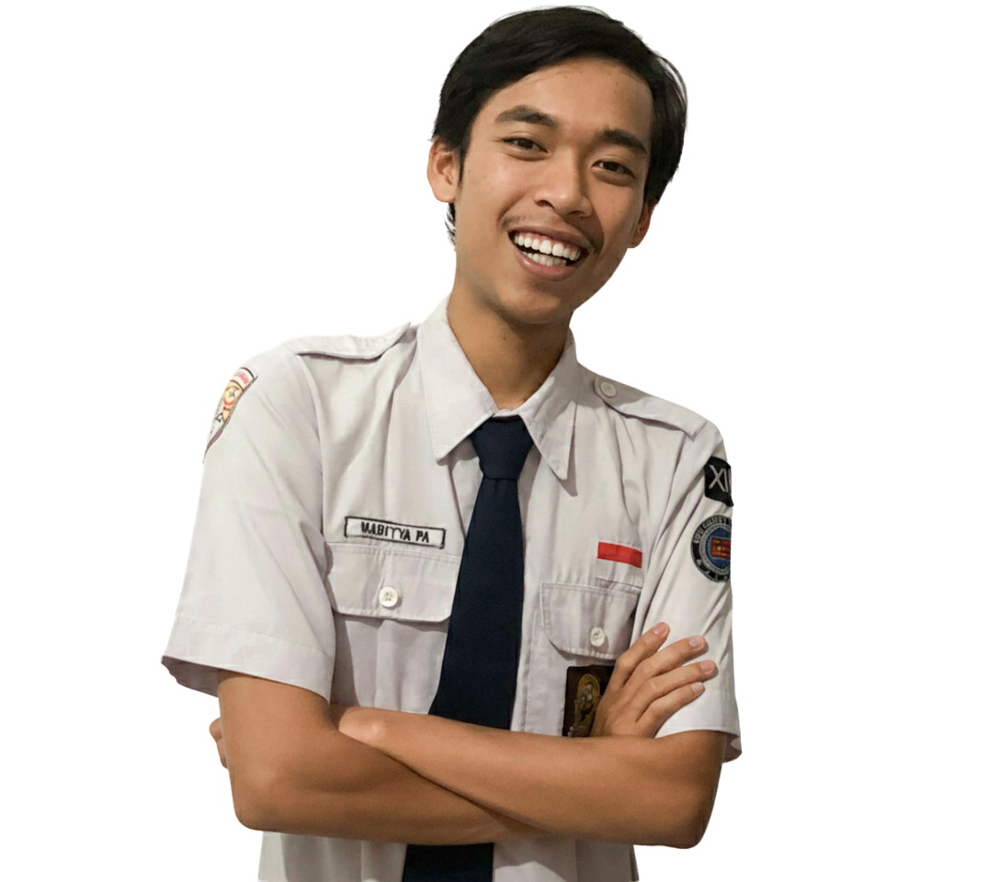

Hallo, saya
Naditya
Saya adalah mahasiswa D4 Teknik Informatika Politeknik Negeri Malang. Saat ini berfokus pada pengembangan aplikasi dan website, serta memiliki ketertarikan di bidang kreativitas digital seperti editing foto dan video untuk menghasilkan karya yang fungsional dan estetis.

About Me
Saya adalah mahasiswa D4 Teknik Informatika Politeknik Negeri Malang dengan minat yang besar di bidang pemrograman mobile dan teknologi digital. Sebelumnya, saya menempuh pendidikan di SMK Negeri 2 Singosari jurusan Teknik Komputer dan Jaringan (TKJ), di mana saya mendapatkan pengalaman berharga dalam dunia teknologi informasi.
Saya memiliki pengalaman magang sebagai teknisi software dan berhasil memperoleh sertifikat kompetensi dari CV Atswa Indonesia. Setelah lulus, saya melanjutkan studi di D2 Pengembangan Perangkat Lunak Situs Politeknik Negeri Malang (Polinema) dan berhasil mendapatkan sertifikat Junior Web Developer dari PT Inixindo.
Saat ini, saya terus mengembangkan kemampuan saya di bidang pengembangan aplikasi mobile serta memperluas keahlian di bidang video dan foto editing. Saya juga memiliki kemampuan dalam penggunaan kamera dan produksi konten visual. Dengan kombinasi kemampuan teknis dan kreatif ini, saya berkomitmen untuk terus belajar dan berinovasi di dunia teknologi informasi.
My Skills
HTML
Mahir dalam struktur HTML untuk pengembangan web yang responsif dan aksesibel.
CSS
Berpengalaman dalam styling modern dengan CSS, termasuk Flexbox, Grid, dan animasi.
PHP
Menguasai dasar pemrograman PHP untuk membangun dan mengelola aplikasi web dinamis.
Editing
Mengedit video dan foto dengan hasil visual yang menarik dan estetis.
Featured Projects

Projek AquaVion
Pada proyek AquaVion, saya bertanggung jawab penuh sebagai Fullstack Developer yang menangani pengembangan sistem secara menyeluruh, baik dari sisi Backend maupun Frontend.

Projek Rukunin Apps
Pada proyek Rukunin Apps, saya berfokus sebagai Mobile Frontend Developer yang bertugas mengimplementasikan desain ke dalam antarmuka aplikasi mobile yang interaktif dan responsif.
Resume
Perjalanan pendidikan dan pengalaman profesional saya.
Work Experience
Fullstack Web Development (AquaVion)
Proyek TerkiniMenangani pengembangan secara menyeluruh baik di sisi Backend maupun Frontend.
Mobile Frontend (Rukunin Apps)
Proyek TerkiniMengimplementasikan desain antarmuka ke dalam aplikasi mobile yang responsif.
Frontend Developer (SARPOLMA)
2025 – Semester 4Mengembangkan sistem informasi sarana prasarana TI Polinema. Menggunakan Laravel, Bootstrap 5, dan MySQL. Antarmuka responsif dan mudah digunakan.
UI/UX Designer (Sistem Prestasi Mahasiswa)
2024 – Semester 3Merancang antarmuka untuk pencatatan prestasi mahasiswa dengan HTML, CSS, PHP Native, dan desain via Figma.
Project Leader & Fullstack Dev (Link.ID)
Feb - Nov 2023 | PT Universal Big DataMemimpin tim 15 orang mengembangkan platform identitas digital menggunakan Laravel, Bootstrap, dan MySQL.
Education
D-IV Teknik Informatika
2024 - 2027 | Politeknik Negeri MalangD-II PPLS
2022 - 2023 | Politeknik Negeri MalangTeknik Komputer dan Jaringan
2019 - 2022 | SMK Negeri 2 SingosariMy Services
Web Development
Berpengalaman di Laravel dan baru saja belajar NextJS. Menggunakan database MySQL dan environment Laragon.
Editing Foto & Video
Memiliki keahlian dalam mengedit foto dan video untuk menghasilkan karya visual yang estetis dan menarik.
Frequently Asked Questions
Let's Get Closer!
Jika Anda tertarik untuk berkolaborasi atau memiliki proyek yang ingin didiskusikan, jangan ragu untuk menghubungi saya.
aditandino2019211@gmail.com
Phone
081336437993
Location
Malang, Jawa Timur, Indonesia 65153